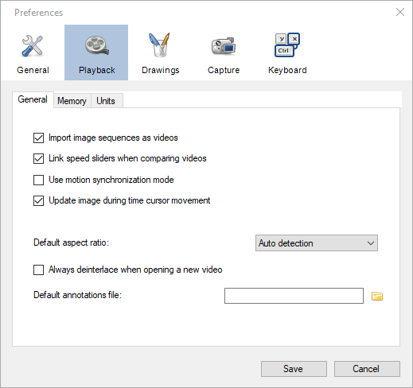
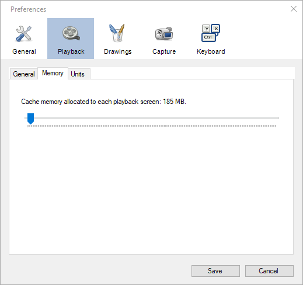
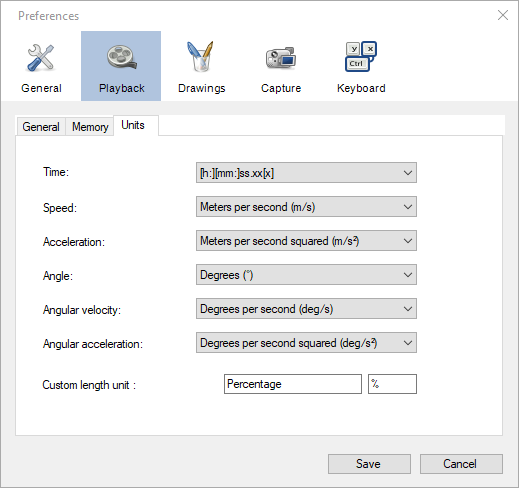

Playback¶
General¶
Import image sequences as videos¶
When this option is enabled and an image file is opened, MotionON will try to detect an image sequence by looking for consecutive numbers in the name of other files of the same folder. If an image sequence is detected, all the image files will automatically be loaded and the whole collection interpreted as a video.
Example of file names interpreted as a sequence:
image_001.png, image_002.png, image_003.png, etc.
test01.jpg, test02.jpg, test03.jpg, etc.
The numbers can be anywhere in the file name. Aside from the numbers the rest of the name should be identical for all files. The amount of leading zeroes in the numbering scheme should be consistent between all files of the sequence.
A gap or a change in the numbering system will be interpreted as the end of the sequence. The detection is bidirectional: any file can be used to load the sequence, the resulting video will always start at the file with the lower number found.
Link speed sliders when comparing videos¶
When this option is checked and two videos are compared, changing the playback speed in one player will automatically change the playback speed in the other player to match it.
Note
The playback speed is matched according to the real time speed, taking into account differences in video file framerate and capture framerate. If one video is in slow motion and the other is at normal speed, this option should still work as expected as long as the capture framerate of the slow motion video is correctly configured.
Update image during time cursor movement¶
When this option is not checked the video display will be paused when manually moving the timeline cursor.
Default aspect ratio¶
This option defines the default image aspect ratio configured any time a video file is opened. It is the same as manually configuring the menu .
The following options are available:
Auto detection
Force 4:3
Force 16:9
The Auto detection option uses the image size and the pixel aspect ratio found in the video file metadata to calculate the image height. The other options will change the height of the video to match a 4:3 or 16:9 aspect ratio.
Always deinterlace when opening a new video¶
This option forces the deinterlacing mechanism to be enabled for all opened files. It is the same as manually configuring the menu .
Default annotations file¶
This option lets you point to a .KVA file containing video annotations that will be automatically loaded when any video is opened.
Other annotations files can still be loaded on top of the video by using the sidecar file method or through the menu . They will be merged with each others.
See also: Saving and loading annotation files.
Memory¶
Cache memory allocated to each playback screen¶
The cache memory is used to load the video content in system memory and speed up navigation. When the active video section (working zone) fits in the cache memory it will be automatically loaded into this cache. If the video section does not fit in the cache the memory will not be consumed.
When using side by side comparison each playback screen can use at most half the memory amount configured.
In the case of multiple instances of MotionON, each instance has its own cache memory.
Units¶
Tip
The unit for length is defined during the calibration process.
Time¶
This option controls the format of all time-related information displayed in the program 1. It is used in the timeline position and duration, in chronometers and clocks, and in exported files.
The following options are available:
Format |
Example |
Description |
|---|---|---|
[h:][mm:]ss.xx[x] |
1:10.48 |
Textual timecode. |
Frame number |
1762 |
Rank of the current frame. |
Total milliseconds |
70480 |
Integer number of milliseconds. |
Total microseconds |
1284 |
Integer number of microseconds. |
Ten thousandth of an hour |
904 |
Ten thousandths of an hour |
Hundredth of a minute |
542 |
Hundredths of a minute |
[h:][mm:]ss.xx[x] + Frame number |
1:10.48 (1762) |
When using textual timecode if the real time framerate is higher than 100 fps, thousandths of seconds are displayed. Hours and minutes are only displayed when necessary.
Note
The time starts at the time origin. The time origin can be configured to be anywhere in the video. Video locations that are before the time origin are displayed as negative numbers. If the time origin is not manually defined, the time origin is automatically set to the start of the current video section.
Speed¶
The unit for speed is used in the trajectory tool and in the Linear kinematics window when setting the measurement display option to Speed, Horizontal velocity or Vertical velocity. It is also used in the Angular kinematics window when using Tangential velocity.
The following options are available:
Unit |
Symbol |
|---|---|
Meters per second |
m/s |
Kilometers per hour |
km/h |
Feet per second |
ft/s |
Miles per hour |
mph |
Note
If no spatial calibration has been performed the speed unit will automatically be Pixels per second (px/s).
Acceleration¶
The unit for acceleration is used in the trajectory tool and in the Linear kinematics window when setting the measurement display option to Acceleration, Horizontal acceleration or Vertical acceleration. It is also used in the Angular kinematics window when using Tangential acceleration, Centripetal acceleration or Resultant acceleration.
The following options are available:
Unit |
Symbol |
|---|---|
Meters per second squared |
m/s² |
Feet per second squared |
ft/s² |
Note
If no spatial calibration has been performed the acceleration unit will automatically be Pixels per second squared (px/s²).
Angle¶
The unit for angle is used in tools measuring angles and in the Angular kinematics window when setting the data source option to Angle or Total displacement.
The following options are available:
Unit |
Symbol |
|---|---|
Degrees |
° |
Radians |
rad |
Angular velocity¶
The unit for angular velocity is used in the Angular kinematics window when setting the data source option to Angular velocity.
The following options are available:
Unit |
Symbol |
|---|---|
Degrees per second |
deg/s |
Radians per second |
rad/s |
Revolutions per minute |
rpm |
Angular acceleration¶
The unit for angular acceleration is used in the Angular kinematics window when setting the data source to Angular acceleration.
The following options are available:
Unit |
Symbol |
|---|---|
Degrees per second squared |
deg/s² |
Radians per second squared |
rad/s² |
Custom length unit¶
This option defines the name and symbol for an additional length unit. The built-in length units are: millimeters, centimeters, meters, inches, feet and yards.
This custom length unit will appear at the bottom of the length unit drop down in the spatial calibration dialogs.
The scale factor between pixels and this unit is defined during the calibration process in the same manner as for other length units.
Using the custom length unit to add micrometers to the list of built-in length units.¶
Footnotes
- 1
With the exception of the time axis in the kinematic analysis dialogs. In these dialogs the time is always displayed numerically, either in milliseconds or normalized.